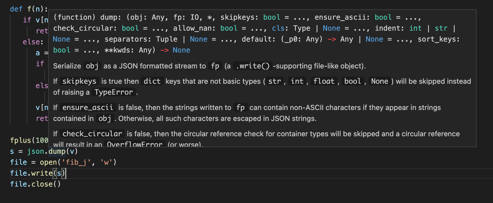

Introducción a la Programación Web | Original, traducido por IA
En la publicación anterior, hablamos sobre cómo reescribimos la funcionalidad de la secuencia de Fibonacci en una versión orientada a objetos, implementando una interfaz de terminal.
server.py：
class BaseHandler:
def handle(self, request:str):
pass
class Server:
def __init__(self, handlerClass):
self.handlerClass = handlerClass
def run(self):
while True:
request = input()
self.handlerClass().handle(request)
fib_handle.py：
from fib import f
from server import BaseHandler, Server
class FibHandler(BaseHandler):
def handle(self, request:str):
n = int(request)
print('f(n)=', f(n))
pass
server = Server(FibHandler)
server.run()
Servidor Web Simple
¿Cómo se puede cambiar a una interfaz Web?
Simplemente reemplazamos el Server anterior con un Server del protocolo HTTP. Primero, veamos cómo es un servidor HTTP en Python.
La biblioteca estándar de Python proporciona un servidor web.
python -m http.server
Nota: El comando anterior no necesita traducción, ya que es un comando específico en Python para iniciar un servidor HTTP simple.
Ejecútalo en la terminal.
$ python -m http.server
Sirviendo HTTP en :: puerto 8000 (http://[::]:8000/) ...
Al abrirlo en el navegador, podrás ver el efecto.

Esto lista el directorio actual. Luego, cuando navegues por la página web, vuelve a mirar la terminal. Esto es bastante interesante.
$ python -m http.server
Sirviendo HTTP en :: puerto 8000 (http://[::]:8000/) ...
::1 - - [07/Mar/2021 15:30:35] "GET / HTTP/1.1" 200 -
::1 - - [07/Mar/2021 15:30:35] código 404, mensaje Archivo no encontrado
::1 - - [07/Mar/2021 15:30:35] "GET /favicon.ico HTTP/1.1" 404 -
::1 - - [07/Mar/2021 15:30:35] código 404, mensaje Archivo no encontrado
::1 - - [07/Mar/2021 15:30:35] "GET /apple-touch-icon-precomposed.png HTTP/1.1" 404 -
::1 - - [07/Mar/2021 15:30:35] código 404, mensaje Archivo no encontrado
::1 - - [07/Mar/2021 15:30:35] "GET /apple-touch-icon.png HTTP/1.1" 404 -
::1 - - [07/Mar/2021 15:30:38] "GET / HTTP/1.1" 200 -
Este es el registro de acceso de la página web. Aquí, GET representa una operación de acceso a datos en el servicio de la página web. HTTP/1.1 indica que se está utilizando la versión 1.1 del protocolo HTTP.
Cómo usarlo para construir nuestro servicio de secuencia de Fibonacci. Primero, busquemos en línea un código de ejemplo, hagamos algunas modificaciones y escribamos un servidor web simple:
from http.server import SimpleHTTPRequestHandler, HTTPServer
class Handler(SimpleHTTPRequestHandler):
def do_GET(self):
self.send_response(200)
self.send_header('Content-type', 'text')
self.end_headers()
self.wfile.write(bytes("hola", "utf-8"))
servidor = HTTPServer((“127.0.0.1”, 8000), Manejador)
server.serve_forever()
¿No te resulta familiar? Es casi lo mismo que hicimos con Server anteriormente. Fíjate en que SimpleHTTPRequestHandler no es una clase base, sino que hay otra llamada BaseHTTPRequestHandler. SimpleHTTPRequestHandler maneja un poco más de contenido en comparación. Añadir la funcionalidad de procesamiento de la secuencia de Fibonacci a esto es sencillo.
Aquí, 127.0.0.1 representa la dirección de la máquina local, y 8000 representa el puerto de la máquina local. ¿Cómo entender el puerto? Es como una ventana en casa, un punto de comunicación entre el interior y el exterior. bytes indica que la cadena de texto se convierte en bytes. utf-8 es un método de codificación de cadenas de texto. send_response, send_header y end_headers son funciones que se utilizan para enviar contenido, específicamente el contenido que define el protocolo HTTP, para que pueda ser interpretado por el navegador. Así es como vemos hi en la página web.

Luego, intenta obtener los parámetros desde la solicitud.
from http.server import SimpleHTTPRequestHandler, HTTPServer
from fib import f
from urllib.parse import urlparse, parse_qs
class Handler(SimpleHTTPRequestHandler):
def do_GET(self):
self.send_response(200)
self.send_header('Content-type', 'text')
self.end_headers()
parsed = urlparse(self.path)
qs = parse_qs(parsed.query)
result = ""
if len(qs) > 0:
ns = qs[0]
if len(ns) > 0:
n = int(ns)
result = str(f(n))
self.wfile.write(bytes(result, "utf-8"))
servidor = HTTPServer((“127.0.0.1”, 8000), Manejador)
server.serve_forever()

Es un poco complicado, ¿verdad? Aquí simplemente estamos analizando algunos parámetros.
self.path=/?n=3
parsed=ParseResult(scheme='', netloc='', path='/', params='', query='n=3', fragment='')
qs={'n': ['3']}
ns=['3']
n=3
Avanzando en la Recursión
Vamos a refactorizar un poco el código.
from http.server import SimpleHTTPRequestHandler, HTTPServer
from fib import f
from urllib.parse import urlparse, parse_qs
class Handler(SimpleHTTPRequestHandler):
En este fragmento de código, se define una clase llamada Handler que hereda de SimpleHTTPRequestHandler. Esta clase se utiliza comúnmente en Python para manejar solicitudes HTTP simples, como servir archivos estáticos desde un directorio local. La clase SimpleHTTPRequestHandler es parte del módulo http.server en la biblioteca estándar de Python.
def parse_n(self, s):
parsed = urlparse(s)
qs = parse_qs(parsed.query)
if len(qs) > 0:
ns = qs['n']
if len(ns) > 0:
n = int(ns[0])
return n
return None
def do_GET(self):
self.send_response(200)
self.send_header('Content-type', 'text')
self.end_headers()
Traducción al español:
def parse_n(self, s):
parsed = urlparse(s)
qs = parse_qs(parsed.query)
if len(qs) > 0:
ns = qs['n']
if len(ns) > 0:
n = int(ns[0])
return n
return None
def do_GET(self):
self.send_response(200)
self.send_header('Content-type', 'text')
self.end_headers()
Nota: El código no se traduce, ya que es un bloque de código y debe mantenerse en su idioma original para su correcto funcionamiento.
result = ""
n = self.parse_n(self.path)
if n is not None:
result = str(f(n))
self.wfile.write(bytes(result, "utf-8"))
self.wfile.write(bytes(result, "utf-8"))
servidor = HTTPServer((“127.0.0.1”, 8000), Manejador)
server.serve_forever()
Introduce la función parse_n para encapsular la extracción de n desde la ruta de la solicitud.
El programa tiene el siguiente problema. Xiao Wang solicitó el término 10000 de la secuencia de Fibonacci, y unos días después, Xiao Ming también solicitó el término 10000 de la secuencia de Fibonacci. En ambas ocasiones, Xiao Wang y Xiao Ming tuvieron que esperar mucho tiempo para obtener el resultado. ¿Cómo podemos mejorar la eficiencia de este servicio web?
Observamos que si n es el mismo, el valor de f(n) siempre es el mismo. Realizamos algunos experimentos.
127.0.0.1 - - [10/Mar/2021 00:33:01] "GET /?n=1000 HTTP/1.1" 200 -
----------------------------------------
Excepción ocurrida durante el procesamiento de la solicitud desde ('127.0.0.1', 50783)
Traceback (última llamada más reciente):
...
if v[n] != -1:
IndexError: índice de lista fuera de rango
Si el array original no es lo suficientemente grande, entonces cambiemos el array v a un tamaño de 10000.
v = []
for x in range(10000):
v.append(-1)
Nota: El código anterior está en Python y no necesita traducción, ya que es un lenguaje de programación universal. Sin embargo, si necesitas una explicación en español, aquí está:
Este código en Python crea una lista vacía llamada v y luego, en un bucle que se repite 10,000 veces, agrega el valor -1 a la lista. Al final, la lista v contendrá 10,000 elementos, todos con el valor -1.
Sin embargo, cuando n es 2000, ocurrió un error de desbordamiento de profundidad de recursión:
127.0.0.1 - - [10/Mar/2021 00:34:00] "GET /?n=2000 HTTP/1.1" 200 -
----------------------------------------
Excepción ocurrida durante el procesamiento de la solicitud desde ('127.0.0.1', 50821)
Traceback (última llamada más reciente):
...
if v[n] != -1:
RecursionError: se excedió la profundidad máxima de recursión en la comparación
Sin embargo, todo esto fue bastante rápido.
¿Por qué? Porque desde f(1) hasta f(1000), solo necesitas calcular cada uno una vez. Esto significa que cuando estás calculando f(1000), la operación + probablemente solo se haya ejecutado alrededor de 1000 veces. Sabemos que la profundidad de recursión en Python es aproximadamente de 1000. Esto significa que podemos optimizar el programa de esta manera: si queremos calcular 2000, primero calculamos 1000. No, esto aún podría generar un error de desbordamiento de recursión. Si queremos calcular 2000, primero calculemos 1200. Si queremos calcular 1200, primero calculemos 400.
Después de calcular 400 y 1200 de esta manera, al calcular 2000, la profundidad de la recursión será aproximadamente de 800, lo que evitará que se produzca un error de desbordamiento de la profundidad de recursión.
v = []
for x in range(1000000):
v.append(-1)
def fplus(n):
if n > 800:
fplus(n-800)
return f(n)
else:
return f(n)
def f(n):
if v[n] != -1:
return v[n]
else:
a = 0
if n < 2:
a = n
else:
a = f(n-1) + f(n-2)
v[n] = a
return v[n]
Se ha añadido la función fplus.
Sin embargo, no puedo evitar preguntarme, ¿qué pasaría si fplus se llama recursivamente 1000 veces? 1000 * 800 = 800000. Cuando configuré n en 800,000, apareció nuevamente un error de profundidad de recursión. Después de seguir probando, descubrí que la situación es aún más complicada. Sin embargo, con esta optimización, calcular 2000 es extremadamente fácil.
Lectura y Escritura de Archivos
Parece que me he desviado del tema. Volviendo al tema del desarrollo web, en la primera solicitud f(400), y en la segunda solicitud f(600), podemos aprovechar los valores del array v generados por la primera solicitud. Sin embargo, cuando cerramos el programa y lo volvemos a iniciar, ya no podemos usarlos. Según nuestro método, el cálculo de la secuencia de Fibonacci es bastante rápido. Pero imaginemos que si fuera lento, ¿qué haríamos? Especialmente como cuando no habíamos introducido el array v, había una gran cantidad de cálculos repetidos. En ese caso, querríamos guardar los resultados que tanto nos costó obtener.
En este momento, se introduce el concepto de caché. El array v aquí actúa como una caché. Sin embargo, solo existe durante el ciclo de vida del programa. Una vez que el programa se cierra, desaparece. Entonces, ¿qué hacer? Naturalmente, se nos ocurre guardarlo en un archivo.
¿Cómo guardar el arreglo v en un archivo?
0 0
1 1
2 1
3 2
4 3
...
Nuestro arreglo v se puede guardar de la siguiente manera. Cada fila se guarda como n f(n). Dado que n crece de manera natural, tal vez podríamos guardar solo los valores de f(n).
0
1
1
2
3
...
¡Ven a probarlo!
f = open("demofile2.txt", "a")
f.write("¡Ahora el archivo tiene más contenido!")
f.close()
abrir y leer el archivo después de la anexión:
f = open(“demofile2.txt”, “r”) print(f.read())
El segundo parámetro de `open` puede ser `'a'`, lo que indica que se añadirá al final del archivo; o `'w'`, lo que indica que se sobrescribirá el archivo.
```python
file = open('fib_v', 'a')
file.write('hi')
file.close()
Al ejecutarlo, efectivamente aparece el archivo fib_v.
fib_v:
hola
Cuando lo ejecutamos nuevamente, se convirtió en esto.
hihi
¿Cómo hacer un salto de línea?
file = open('fib_v', 'a')
file.write('hola\n')
file.close()
Esto se imprime una vez, aparece hihihi, no se ve un salto de línea. Sin embargo, al imprimirlo nuevamente, se produce un salto de línea. Esto indica que el salto de línea ya se imprimió la primera vez, pero estaba al final y no era visible.
¿Cómo se lee?
file = open('fib_v', 'r')
print(file.read())
$ python fib.py
hihihi
hi
A continuación, modifiquemos nuestro programa de Fibonacci.
v = []
for x in range(1000000):
v.append(-1)
def read():
file = open('fib_v', 'r')
s = file.read()
if len(s) > 0:
lines = s.split('\n')
if (len(lines) > 0):
for i in range(len(lines)):
v[i] = int(lines[i])
def save():
file = open('fib_v', 'w')
s = ''
start = True
for vv in v:
if vv == -1:
break
if start == False:
s += '\n'
start = False
s += str(vv)
file.write(s)
file.close()
def fcache(n):
x = fplus(n)
save()
return x
def fplus(n):
if n > 800:
fplus(n-800)
return f(n)
else:
return f(n)
def f(n):
if v[n] != -1:
return v[n]
else:
a = 0
if n < 2:
a = n
else:
a = f(n-1) + f(n-2)
v[n] = a
return v[n]
read() fcache(10) save()
Finalmente, hemos terminado de escribir el programa. Después de ejecutar el programa, el archivo `fib_v` se ve así.
`fib_v`:
```shell
0
1
1
2
3
5
8
13
21
34
55
Sí, el análisis anterior puede resultar un poco complicado. \n es un carácter de nueva línea. ¿Existe una forma más simple y unificada de analizar estos datos? Para resolver este problema, las personas inventaron el formato de datos JSON.
JSON
El nombre completo de JSON es JavaScript Object Notation. A continuación se muestra un ejemplo de JSON.
{"name":"John", "age":31, "city":"New York"}
La representación anterior muestra una forma de mapeo.
JSON tiene los siguientes elementos básicos:
- Números o cadenas de texto
- Listas
- Mapeos
Estos elementos básicos también pueden anidarse de manera arbitraria. Es decir, una lista puede contener otras listas, un mapeo puede contener listas, y así sucesivamente.
{
"name":"John",
"age":30,
"cars":[ "Ford", "BMW", "Fiat" ]
}
Escribirlo en una línea y escribirlo de esta manera más estética tiene una diferencia en el significado. Quizás podamos imaginar sus gráficos de cálculo. Los espacios no afectarán sus gráficos de cálculo.
A continuación, necesitamos convertir el arreglo v en una cadena de texto en formato json.
import json
v = [] for x in range(1000000): v.append(-1)
def fplus(n):
if n > 800:
fplus(n-800)
return f(n)
else:
return f(n)
def f(n):
if v[n] != -1:
return v[n]
else:
a = 0
if n < 2:
a = n
else:
a = f(n-1) + f(n-2)
v[n] = a
return v[n]
fplus(100)
s = json.dump(v)
file = open('fib_j', 'w')
file.write(s)
file.close()
Cuando escribimos esto, obtuvimos un error: TypeError: dump() missing 1 required positional argument: 'fp'. En vscode, puedes ver la definición de la función de la siguiente manera.

Puedes mover el mouse sobre dump para verlo. Muy conveniente, ¿verdad?
fplus(10)
file = open('fib_j', 'w')
json.dump(v, file)
file.close()
Calcular hasta 100 muestra demasiados números, así que aquí lo cambié a 10. Resulta que el segundo parámetro de dump puede recibir un objeto file.
De esta manera puedes ver el archivo:
[0, 1, 1, 2, 3, 5, 8, 13, 21, 34, 55, -1, -1, -1]
Ten en cuenta que se han omitido muchos -1 al final.
def leer():
archivo = open('fib_j', 'r')
s = archivo.read()
sv = json.loads(s)
for i in range(len(sv)):
if sv[i] != -1:
v[i] = sv[i]
def guardar():
archivo = open('fib_j', 'w')
json.dump(v, archivo)
archivo.close()
read()
for vv in v:
if vv != -1:
print(vv)
Cuando esto sucede, se puede ver que se imprime:
0
1
1
2
3
5
8
13
21
34
55
Revisemos estas funciones juntas:
def read():
file = open('fib_j', 'r')
s = file.read()
sv = json.loads(s)
for i in range(len(sv)):
v[i] = sv[i]
En este código, se define una función llamada read que realiza las siguientes acciones:
- Abre un archivo llamado
'fib_j'en modo de lectura ('r'). - Lee el contenido del archivo y lo almacena en la variable
s. - Convierte el contenido leído (que se asume es una cadena JSON) en una estructura de datos de Python utilizando
json.loads. - Itera sobre los elementos de la estructura de datos
svy los asigna a un arreglo o listav.
Nota: Asegúrate de que la variable v esté definida antes de usar esta función, ya que no se inicializa dentro de la función.
def save():
sv = []
for i in range(len(v)):
if v[i] != -1:
sv.append(v[i])
else:
break
file = open('fib_j', 'w')
json.dump(sv, file)
file.close()
read()
fplus(100)
save()
Luego, al revisar el archivo, efectivamente se guardaron los valores correctos, y de manera muy ordenada.
[0, 1, 1, 2, 3, 5, 8, 13, 21, 34, 55, 89, 144, 233, 377, 610, 987, 1597, 2584, 4181, 6765, 10946, 17711, 28657, 46368, 75025, 121393, 196418, 317811, 514229, 832040, 1346269, 2178309, 3524578, 5702887, 9227465, 14930352, 24157817, 39088169, 63245986, 102334155, 165580141, 267914296, 433494437, 701408733, 1134903170, 1836311903, 2971215073, 4807526976, 7778742049, 12586269025, 20365011074, 32951280099, 53316291173, 86267571272, 139583862445, 225851433717, 365435296162, 591286729879, 956722026041, 1548008755920, 2504730781961, 4052739537881, 6557470319842, 10610209857723, 17167680177565, 27777890035288, 44945570212853, 72723460248141, 117669030460994, 190392490709135, 308061521170129, 498454011879264, 806515533049393, 1304969544928657, 2111485077978050, 3416454622906707, 5527939700884757, 8944394323791464, 14472334024676221, 23416728348467685, 37889062373143906, 61305790721611591, 99194853094755497, 160500643816367088, 259695496911122585, 420196140727489673, 679891637638612258, 1100087778366101931, 1779979416004714189, 2880067194370816120, 4660046610375530309, 7540113804746346429, 12200160415121876738, 19740274219868223167, 31940434634990099905, 51680708854858323072, 83621143489848422977, 135301852344706746049, 218922995834555169026, 354224848179261915075]
Base de datos
Si los datos son grandes y la estructura es compleja, ¿qué hacer? Guardar los datos en archivos se volverá lento y engorroso. Aquí es donde entra en juego la base de datos. Es como una hoja de cálculo Excel programable. Una hoja de cálculo Excel que permite realizar operaciones de inserción, eliminación, modificación y consulta de manera conveniente mediante código.
Encontré un ejemplo en la documentación oficial.
import sqlite3
con = sqlite3.connect('example.db')
cur = con.cursor()
Crear tabla
cur.execute(‘'’CREATE TABLE stocks (date text, trans text, symbol text, qty real, price real)’’’)
Insertar una fila de datos
cur.execute(“INSERT INTO stocks VALUES (‘2006-01-05’,’BUY’,’RHAT’,100,35.14)”)
Guardar (confirmar) los cambios
con.commit()
También podemos cerrar la conexión si hemos terminado con ella.
Solo asegúrate de que cualquier cambio haya sido confirmado, o se perderán.
con.close()
```python
for row in cur.execute('SELECT * FROM stocks ORDER BY price'):
print(row)
cursor representa un cursor, similar a un puntero. Lo anterior se refiere a conectar a la base de datos, crear una tabla, insertar datos, confirmar los cambios y cerrar la conexión. El último ejemplo es una demostración de cómo consultar datos.
import sqlite3
v = [] for x in range(1000000): v.append(-1)
def create_table(cur: sqlite3.Connection):
cur.execute('CREATE TABLE vs(v text)')
def leer():
pass
def save():
con = sqlite3.connect('fib.db')
cur = con.cursor()
create_table(cur)
for vv in v:
if vv != -1:
cur.execute('INSERT INTO vs VALUES(' + str(vv) + ')')
else:
break
con.commit()
con.close()
fplus(10) guardar()
Escrito. Pruébalo.
Ya tengo `sqlite3` instalado en mi computadora.
```shell
$ sqlite3
SQLite versión 3.32.3 2020-06-18 14:16:19
Introduzca ".help" para ver sugerencias de uso.
Conectado a una base de datos transitoria en memoria.
Use ".open FILENAME" para reabrir en una base de datos persistente.
sqlite> .help
.auth ON|OFF Mostrar llamadas de autorización
.backup ?DB? FILE Hacer una copia de seguridad de la base de datos (por defecto "main") en FILE
.bail on|off Detenerse después de encontrar un error. Por defecto OFF
.binary on|off Activar o desactivar la salida binaria. Por defecto OFF
.cd DIRECTORY Cambiar el directorio de trabajo a DIRECTORY
.changes on|off Mostrar el número de filas cambiadas por SQL
.check GLOB Fallar si la salida desde .testcase no coincide
.clone NEWDB Clonar datos en NEWDB desde la base de datos existente
.databases Listar nombres y archivos de las bases de datos adjuntas
.dbconfig ?op? ?val? Listar o cambiar opciones de sqlite3_db_config()
.dbinfo ?DB? Mostrar información de estado sobre la base de datos
.dump ?TABLE? Renderizar el contenido de la base de datos como SQL
.echo on|off Activar o desactivar el eco de comandos
.eqp on|off|full|... Activar o desactivar el EXPLAIN QUERY PLAN automático
.excel Mostrar la salida del siguiente comando en una hoja de cálculo
.exit ?CODE? Salir del programa con el código de retorno CODE
.expert EXPERIMENTAL. Sugerir índices para consultas
.explain ?on|off|auto? Cambiar el modo de formato de EXPLAIN. Por defecto: auto
.filectrl CMD ... Ejecutar varias operaciones de sqlite3_file_control()
.fullschema ?--indent? Mostrar el esquema y el contenido de las tablas sqlite_stat
.headers on|off Activar o desactivar la visualización de encabezados
.help ?-all? ?PATTERN? Mostrar texto de ayuda para PATTERN
.import FILE TABLE Importar datos desde FILE a TABLE
.imposter INDEX TABLE Crear una tabla impostora TABLE en el índice INDEX
.indexes ?TABLE? Mostrar nombres de índices
.limit ?LIMIT? ?VAL? Mostrar o cambiar el valor de un SQLITE_LIMIT
.lint OPTIONS Reportar posibles problemas de esquema
.log FILE|off Activar o desactivar el registro. FILE puede ser stderr/stdout
.mode MODE ?TABLE? Establecer el modo de salida
.nullvalue STRING Usar STRING en lugar de valores NULL
.once ?OPTIONS? ?FILE? Enviar la salida del siguiente comando SQL solo a FILE
.open ?OPTIONS? ?FILE? Cerrar la base de datos existente y abrir FILE
.output ?FILE? Enviar la salida a FILE o a stdout si se omite FILE
.parameter CMD ... Gestionar enlaces de parámetros SQL
.print STRING... Imprimir el STRING literal
.progress N Invocar el manejador de progreso después de cada N opcodes
.prompt MAIN CONTINUE Reemplazar los prompts estándar
.quit Salir del programa
.read FILE Leer la entrada desde FILE
.recover Recuperar la mayor cantidad de datos posible de una base de datos corrupta
.restore ?DB? FILE Restaurar el contenido de DB (por defecto "main") desde FILE
.save FILE Escribir la base de datos en memoria en FILE
.scanstats on|off Activar o desactivar las métricas de sqlite3_stmt_scanstatus()
.schema ?PATTERN? Mostrar las declaraciones CREATE que coincidan con PATTERN
.selftest ?OPTIONS? Ejecutar pruebas definidas en la tabla SELFTEST
.separator COL ?ROW? Cambiar los separadores de columna y fila
.session ?NAME? CMD ... Crear o controlar sesiones
.sha3sum ... Calcular un hash SHA3 del contenido de la base de datos
.shell CMD ARGS... Ejecutar CMD ARGS... en un shell del sistema
.show Mostrar los valores actuales de varias configuraciones
.stats ?on|off? Mostrar estadísticas o activar/desactivar estadísticas
.system CMD ARGS... Ejecutar CMD ARGS... en un shell del sistema
.tables ?TABLE? Listar nombres de tablas que coincidan con el patrón LIKE TABLE
.testcase NAME Comenzar a redirigir la salida a 'testcase-out.txt'
.testctrl CMD ... Ejecutar varias operaciones de sqlite3_test_control()
.timeout MS Intentar abrir tablas bloqueadas durante MS milisegundos
.timer on|off Activar o desactivar el temporizador SQL
.trace ?OPTIONS? Mostrar cada declaración SQL a medida que se ejecuta
.vfsinfo ?AUX? Información sobre el VFS de nivel superior
.vfslist Listar todos los VFS disponibles
.vfsname ?AUX? Imprimir el nombre de la pila VFS
.width NUM1 NUM2 ... Establecer el ancho de las columnas para el modo "column"
Puedes ver que hay muchos comandos. Entre ellos, .quit significa salir.
Si no lo tienes, puedes descargarlo desde el sitio web oficial o ejecutar brew install sqlite para instalarlo.
$ sqlite3 fib.db
sqlite> show tables
...> ;
Error: cerca de "show": error de sintaxis
sqlite> tables;
Error: cerca de "tables": error de sintaxis
sqlite> .schema
CREATE TABLE vs(v text);
Al principio pensé que sería como en MySQL, donde puedes usar show tables para ver qué tablas hay. Luego descubrí que en SQLite es diferente. MySQL es otro tipo de base de datos, y también es algo que aprenderemos en el futuro.
sqlite> select * from vs;
0
1
1
2
3
5
8
13
21
34
55
Efectivamente, hemos escrito los datos correctamente. Ten en cuenta que utilizamos text porque nuestros números son muy grandes y es posible que el tipo de dato entero de la base de datos no pueda almacenarlos.
import sqlite3
v = [] for x in range(1000000): v.append(-1)
def fplus(n):
if n > 800:
fplus(n-800)
return f(n)
else:
return f(n)
def f(n):
if v[n] != -1:
return v[n]
else:
a = 0
if n < 2:
a = n
else:
a = f(n-1) + f(n-2)
v[n] = a
return v[n]
def create_table(cur: sqlite3.Connection):
cur.execute('CREATE TABLE vs(v text)')
def read():
con = sqlite3.connect('fib.db')
cur = con.cursor()
create_table(cur)
i = 0
for row in cur.execute('SELECT * from vs'):
v[i] = int(row)
con.close()
def save():
con = sqlite3.connect('fib.db')
cur = con.cursor()
create_table(cur)
for vv in v:
if vv != -1:
cur.execute('INSERT INTO vs VALUES(' + str(vv) + ')')
else:
break
con.commit()
con.close()
read()
for i in range(10):
print(v[i])
Continuamos añadiendo la función read. Sin embargo, al ejecutarla, apareció un error.
$ python fib_db.py
...
File "fib_db.py", line 27, in create_table
cur.execute('CREATE TABLE vs(v text)')
sqlite3.OperationalError: la tabla vs ya existe
No podemos crear la tabla nuevamente, la tabla ya existe. Vamos a modificar ligeramente la sintaxis.
def create_table(cur: sqlite3.Connection):
cur.execute('CREATE TABLE IF NOT EXISTS vs(v text)')
Sin embargo, ocurrió un error.
v[i] = int(row)
TypeError: el argumento de int() debe ser una cadena, un objeto tipo bytes o un número, no una 'tupla'
¿Qué es un tuple? Significa que row devolvió un tuple. Vamos a imprimirlo.
for row in cur.execute('SELECT * from vs'):
print(row)
v[i] = int(row)
El resultado es:
('0',)
En realidad, tuple es bastante similar a un array. La diferencia es que sus elementos pueden ser de diferentes tipos, a diferencia de los elementos de un array, que deben ser del mismo tipo.
def read():
con = sqlite3.connect('fib.db')
cur = con.cursor()
create_table(cur)
i = 0
for row in cur.execute('SELECT * from vs'):
v[i] = int(row[0])
con.close()
Así lo cambié. Sin embargo, es bastante extraño. La salida es la siguiente:
55
-1
-1
-1
-1
-1
-1
-1
-1
-1
Resulta que nuestro i no se estaba incrementando.
for row in cur.execute('SELECT * from vs'):
v[i] = int(row[0])
i += 1
Así es como debe ser.
0
1
1
2
3
5
8
13
21
34
Sin embargo, notamos que cuando los números son muy grandes, se guardan en la base de datos de esta manera:
4660046610375530309
7540113804746346429
1.22001604151219e+19
1.97402742198682e+19
3.19404346349901e+19
Al ejecutarlo nuevamente, se ve así.
$ python fib_db.py
Traceback (most recent call last):
File "fib_db.py", line 35, in read
v[i] = int(row[0])
ValueError: literal no válido para int() con base 10: '1.22001604151219e+19'
Modifícalo:
cur.execute("INSERT INTO vs VALUES('" + str(vv) + "')")
Noté que aquí hemos cambiado las comillas simples alrededor de la declaración INSERT por comillas dobles, y además hemos añadido comillas a nuestra cadena numérica. Si antes lo escribíamos de esa manera, la base de datos interpretaba nuestra cadena como un número, pero ahora, al encerrarla entre comillas, se interpreta como una cadena de texto.
Luego, todo estará correcto. Sin embargo, ¿cómo se pueden eliminar los datos erróneos anteriores?
$ sqlite3 fib.db
SQLite version 3.32.3 2020-06-18 14:16:19
Ingresa ".help" para ver sugerencias de uso.
sqlite> delete * from vs;
A continuación, puedes probar otras declaraciones. CRUD (Crear, Leer, Actualizar, Eliminar). Aquí hemos proporcionado ejemplos de Crear, Eliminar y Leer.
Práctica
- Los estudiantes exploran de manera similar como se muestra arriba.